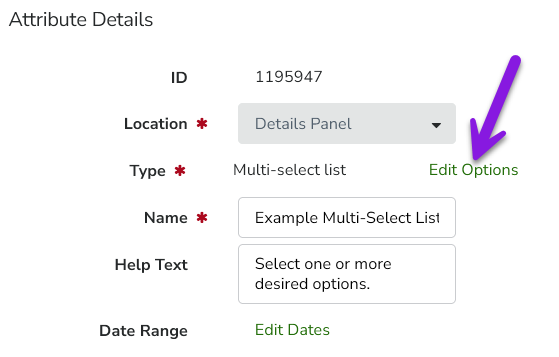
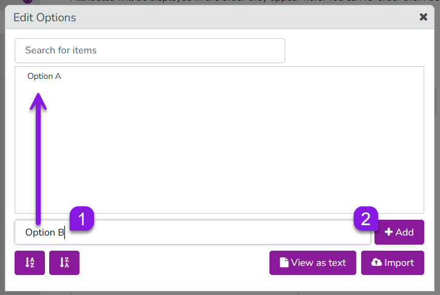
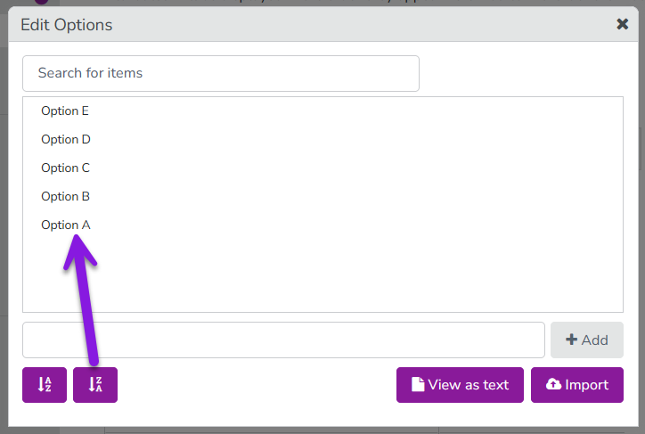
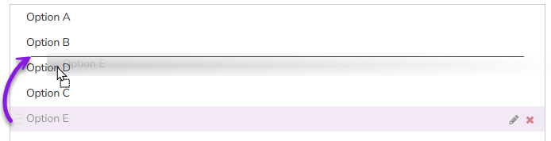
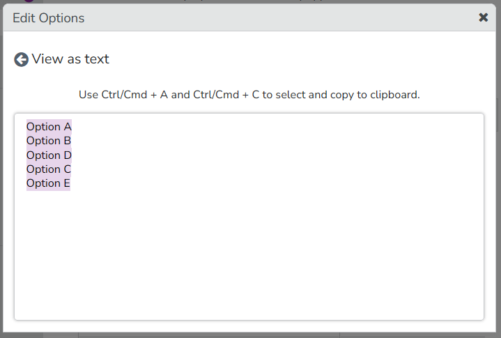
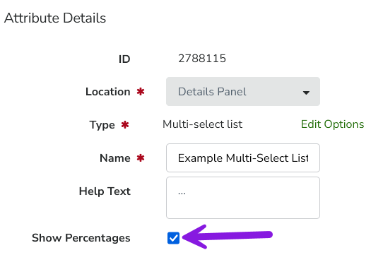
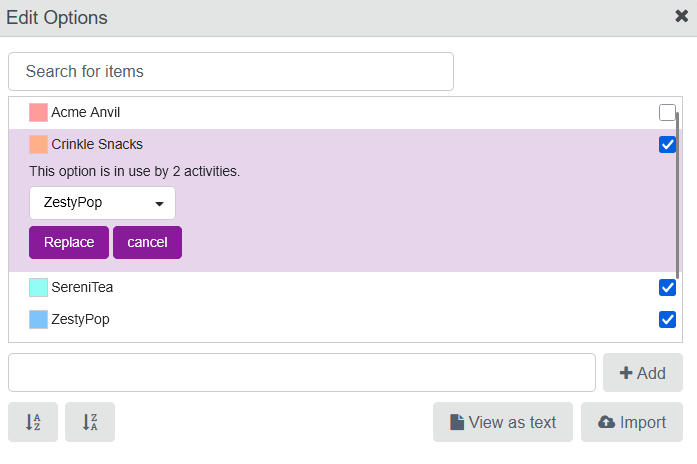

Attributes with the types Drop-Down List and Multi-Select List have additional settings. These settings configure the predefined set of options that a user can select from the list.
When you configure list options for these attribute types, you can:
Add list options, rename them and change their display order
Manage list options in bulk with the export and import features
Deactivate list options
Delete list options (and replace them with other list options on activities where they are in use)
Add and manage list options
Add and configure list options individually
You can add, rename, or change the display order of individual list options for any Drop-Down List or Multi-Select List attribute.
Open the attribute settings of the Drop-Down List or Multi-Select List attribute for which you want to manage list options. 2.In the Attribute Details panel, click Edit Options: 
Type the name for an option into the text box and click + Add. The option is added to the list of options: 
Repeat the previous step to add more options.
Optional: You can rename and change the sort order of list options:
To rename an option: Hold the pointer over the list option and click Edit. Type the new name into the field. Click anywhere outside the field to save the new name.
To change the alphabetical sort order of the options: Click Sort A-Z or Sort Z-A: 
To manually set the sort order of the options: Drag the list option you want to move to the place in the order where you want it to be displayed (a horizontal line shows where in the order the option will be placed): 
When you have finished configuring the list options, close the Edit Options dialog. Your changes are saved automatically, and will take effect immediately.
Add list options in bulk
You can import list options to create them in bulk (rather than individually). The import feature is designed to be used together with the export feature, which lets you copy an existing list of options from any list-type attribute.
Open the attribute settings of the Drop-Down List or Multi-Select List attribute from which you want to export (copy) the list options.
In the Attribute Details panel, click Edit Options.
In the Edit Options dialog, click View as text.
The View as text dialog is displayed. The current list options for the attribute are displayed in plain text, with each option on a separate line. Select all the options and copy them to the clipboard. 
Close the Edit Options dialog.
In the list of attributes, find the Drop-Down List or Multi-Select List attribute to which you want to import the list options you just copied. Open its Attribute Details panel, then click Edit Options.
In the Edit Options dialog, click Import. The Import dialog is displayed.
Click into the text field and paste in the values you copied from the other attribute, then click Import. The Import dialog closes, and you are returned to the Edit Options dialog.
In the Edit Options dialog, the imported list options now appear in the list of options configured for the attribute. You can now make any changes to the options as needed, such as changing the order or renaming options.
When you have finished configuring the list options, close the Edit Options dialog. Your changes are saved automatically, and will take effect immediately.
Enable the Show Percentages option (Multi-Select List)
On Multi-Select List attributes, you can enable an additional Show Percentages option. When this option is enabled, users can specify a percentage value for each of the options that they select:
Examples
You can use the Show Percentages option for attributes where you want to record the relative weighting or contribution of each selection.
Here are some example use cases:
How much each selection contributes to an overall objective or target: For example, to specify how much a tactic contributes to different funnel stages.
How an overall value or quantity should be split between selections: For example, to specify how the total time spent on an activity was divided between various distinct actions.
Turn on Show Percentages for a Multi-Select List Attribute
Open the attribute settings of the Drop-Down List or Multi-Select List attribute from which you want to export (copy) the list options.
In the Attribute Details panel, select Show Percentages: 
Your change is saved automatically, and takes effect immediately.
On all activities where the attribute is used, users can now set percentage values for each selected list option for this attribute.
You can turn Show Percentages off again for an attribute at any time. To do so, repeat these steps, and deselect the Show Percentages option in the attribute's settings.
How the Show Percentages feature works
When you enable Show Percentages on a Multi-Select List attribute, the system initially sets the percentage values for all selected list options automatically: each time an additional list option is selected (or deselected), the system recalculates and adjusts the percentage value of each selection to maintain an equal distribution. For example, if there are four selections, each will be automatically assigned a value of 25% (1/4 of 100%).
After making all selections, users can manually adjust the percentage values for each selection as needed:
The sum of all specified percentage values must always total exactly 100%.
If the sum of the percentage values totals more or less than 100%, the system will display an error message. Any changes to the selections or their percentage values will not be saved until the user adjusts the percentage values to total exactly 100%.
Users can enter percentage values as decimals, and can specify as many decimal places as they want.
Decimal places are also taken into account for the requirement that all percentage values must total 100%: if a decimal percentage value is specified for one selection, at least one other selection must also have a decimal percentage value with the same number of decimal places to sum to a whole number.
Users can enter a value of 0% for any selection, including for multiple selections (provided the total of all values for all selections still equals 100%).
After they are set, the percentage values are displayed beside the label of each selection wherever the attribute field is displayed.
Deactivate and delete list options
You can deactivate or delete a list option at any time. Both deactivating and deleting a list option will make the list option no longer available as a selectable option on any activity where the attribute is used.
The difference between deactivating and deleting a list option is how the list option is handled on activities where it has been set as the selected value for the attribute:
Deactivated: The list option is kept as the selected value on any activity where it was previously set (unless manually changed to a different list option).
Deleted: The list option is not kept as the selected attribute value on any activity where it was previously set.
Deactivate a list option
Open the attribute settings of the Drop-Down List or Multi-Select List attribute on which you want to deactivate a list option.
In the Attribute Details panel, click Edit Options.
To deactivate a list option, deselect its checkbox in the Edit Options dialog:
Optional: Repeat the previous step to deactivate additional list options.
When you have finished deactivating list options, close the Edit Options dialog. Your changes are saved automatically, and will take effect immediately.
Delete a list option
Open the attribute settings of the Drop-Down List or Multi-Select List attribute on which you want to deactivate a list option.
In the Attribute Details panel, click Edit Options.
To remove a list option,hold the pointer over the list option and click Delete:
If the list option was not used on any activities, it is deleted immediately.
If the list option is in use on any activities, select another available list option from the menu to replace it. Click Replace to delete the list option and set the selected replacement list option on the affected activities instead: 
Optional: Repeat the previous step to delete additional list options.
When you have finished deleting list options, close the Edit Options dialog. Your changes are saved automatically, and will take effect immediately.
 Edit. Type the new name into the field. Click anywhere outside the field to save the new name.
Edit. Type the new name into the field. Click anywhere outside the field to save the new name.


 Delete:
Delete: